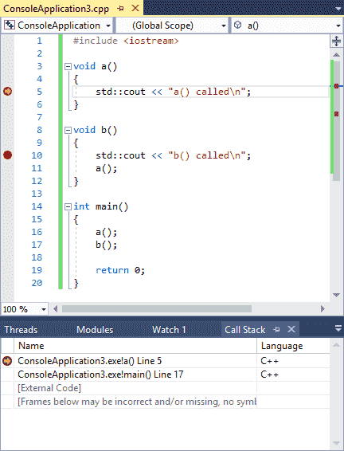
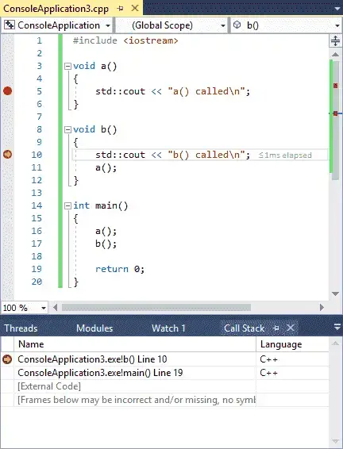
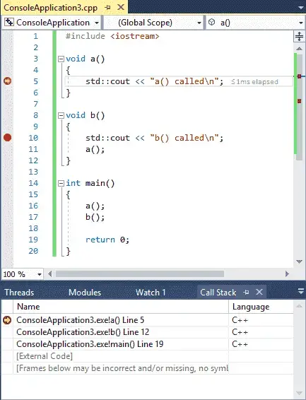

Modern debuggers contain one more debugging information window that can be very useful in debugging your program, and that is the call stack window.
When your program calls a function, you already know that it bookmarks the current location, makes the function call, and then returns. How does it know where to return to? The answer is that it keeps track in the call stack.
The call stack is a list of all the active functions that have been called to get to the current point of execution. The call stack includes an entry for each function called, as well as which line of code will be returned to when the function returns. Whenever a new function is called, that function is added to the top of the call stack. When the current function returns to the caller, it is removed from the top of the call stack, and control returns to the function just below it.
The call stack window is a debugger window that shows the current call stack. If you don’t see the call stack window, you will need to tell the IDE to show it.
For Visual Studio users
In Visual Studio, the call stack window can be found via Debug menu > Windows > Call Stack. Note that you have to be in a debug session to activate this window.
For Code::Blocks users
In Code::Blocks, the call stack window can be found via Debug menu > Debugging windows > Call stack.
Let’s take a look at the call stack using a sample program:
#include <iostream>
void a()
{
std::cout << "a() called\n";
}
void b()
{
std::cout << "b() called\n";
a();
}
int main()
{
a();
b();
return 0;
}COPY
Put breakpoints on lines 5 and 10 of this program, and then start debugging mode. Because function a is called first, the breakpoint on line 5 will be hit first.
At this point, you should see something like this:

Note that your line numbers may be slightly different (off by 1), and that instead of [External Code] you may see a bunch of other crazily named functions. These differences are insubstantial.
What’s relevant here is the top two lines. From the bottom up, we can see that function main was called first, and then that function a was called next.
The line 5 next to function a shows us where the current point of execution is (which matches the execution marker in the code window). The line 17 on the second line indicates the line that will be returned to when control returns to function main.
Tip
The line numbers after the function names show the next line to be executed in each function.
Since the top entry on the call stack represents the currently executing function, the line number here shows the next line that will execute when execution resumes. The remaining entries in the call stack represent functions that will be returned to at some point, so the line number for these represent the next statement that will execute after the function is returned to.
Now, choose the continue debug command to advance execution to the next breakpoint, which will be on line 10. The call stack should update to reflect the new situation:

You’ll notice that function b is now the top line of the call stack, reflecting the fact that function b is the function that is actively being executed. Note that function a is no longer represented on the call stack. This is because function a was removed from the call stack when it returned.
Choose the continue debug command one more time, and we’ll hit the breakpoint on line 5 again (because function b calls function a). The call stack will look like this:

There are now three functions on the call stack: (from bottom to top) main, which called function b, which called function a.
The call stack is useful in conjunction with breakpoints, when your breakpoint is hit and you want to know what functions were called to get to that specific point in the code.
Conclusion
Congratulations, you now know the basics of using an integrated debugger! Using stepping, breakpoints, watches, and the call stack window, you now have the fundamentals to be able to debug almost any problem. Like many things, becoming good at using a debugger takes some practice and some trial and error. But again, we’ll reiterate the point that the time devoted to learning how to use an integrated debugger effectively will be repaid many times over in time saved debugging your programs!